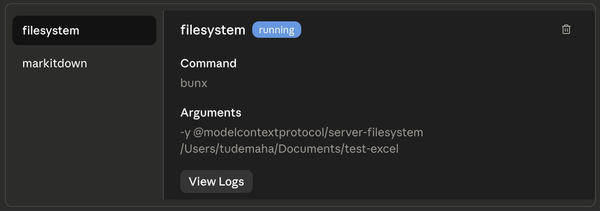
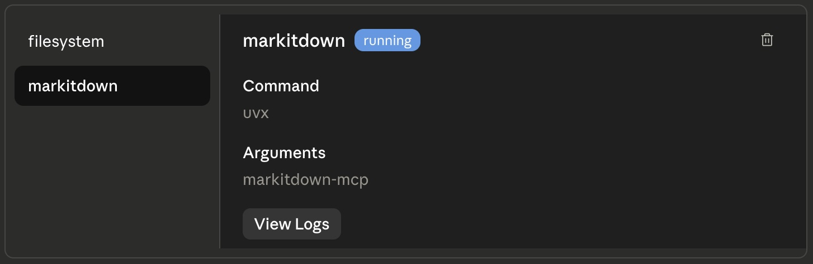
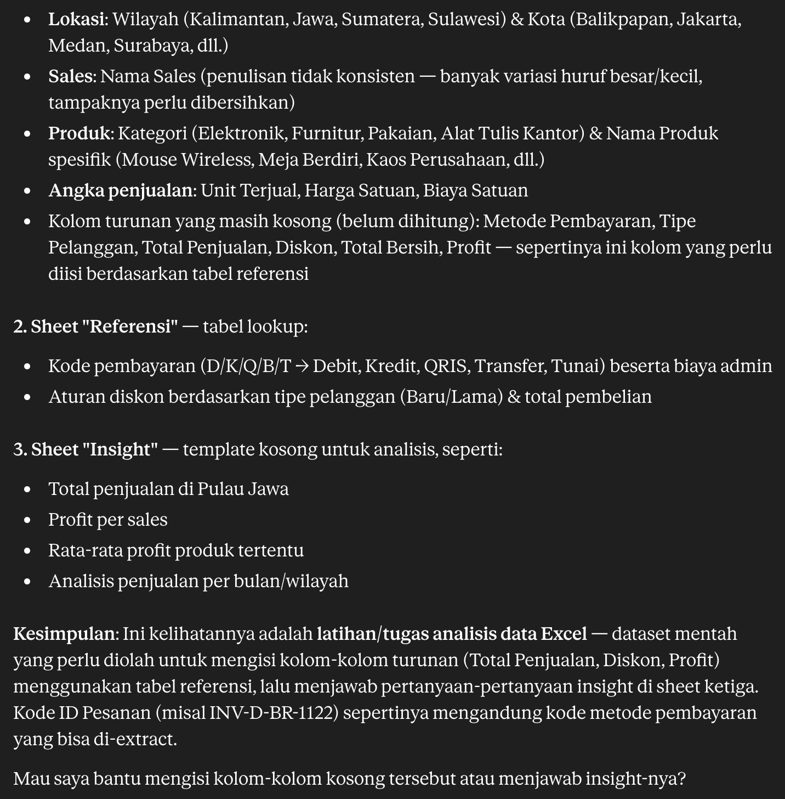
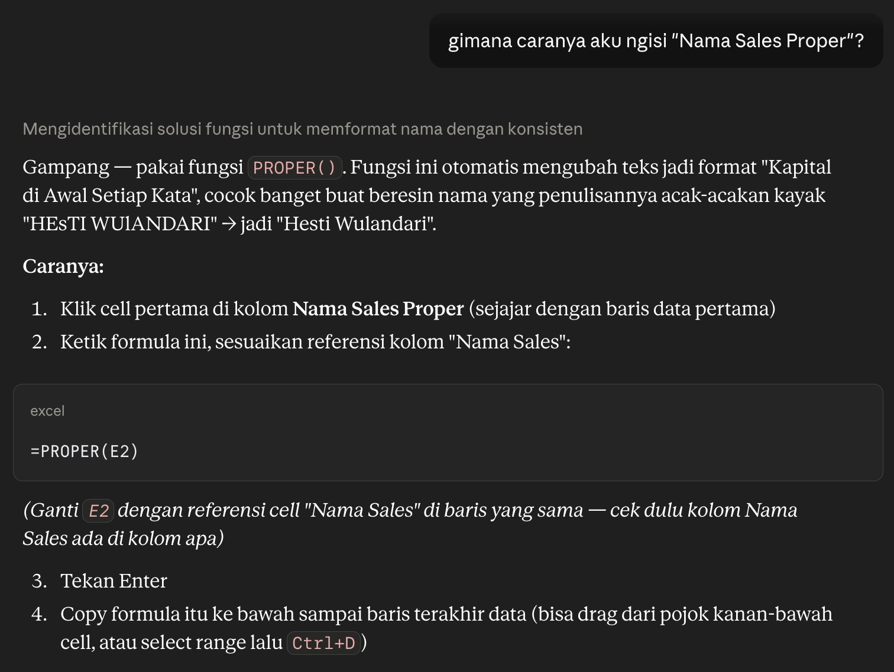
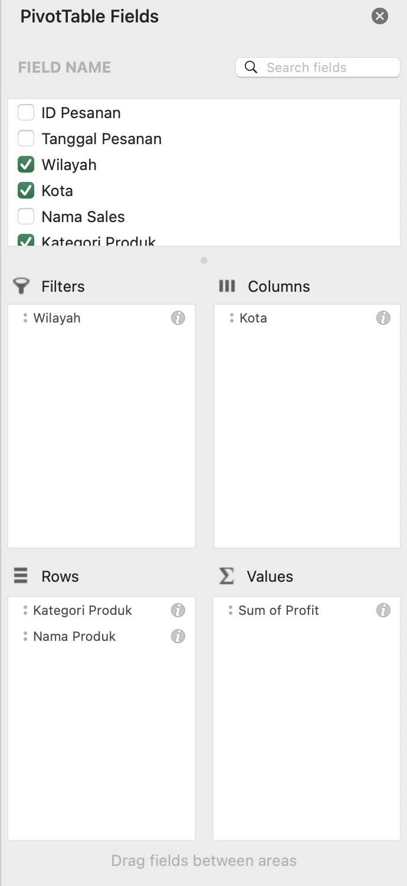
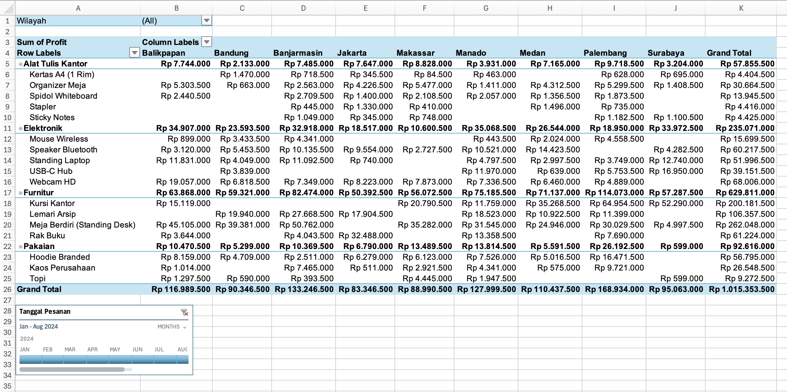
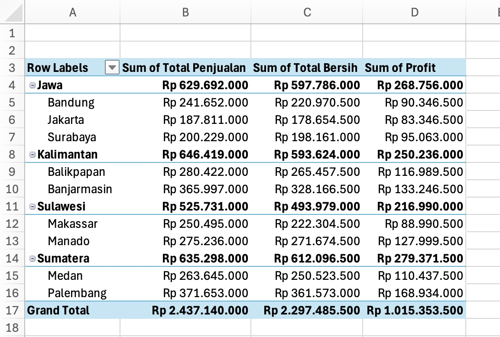
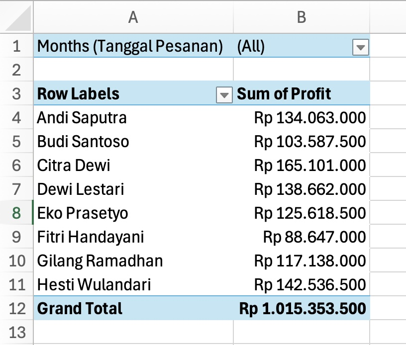

AI usage enable us to have a fast productivity boost. By using AI, we can renew our Office workflow using the help of AI Companion. Claude is the main AI model/platform will be used in this session.
Claude, especially Claude Desktop has the ability to connect to MCP servers. This allows Claude to access our Excel file without the need to upload it manually. This also allow us to connect to various MCP servers.
Let's make this session a safe place to learn. Don't hesitate to ask questions. If you have completed several steps, please feel free to assist other participants who might need help.
Follow instructions below based on your operating system.
curl -fsSL https://bun.sh/install | bash
bun --version to verify that Bun was installed successfullypowershell -c "irm bun.sh/install.ps1 | iex"
bun --version to verify that Bun was installed successfullyFollow instructions below based on your operating system.
curl -LsSf https://astral.sh/uv/install.sh | sh
uv --version to verify that Bun was installed successfullypowershell -ExecutionPolicy ByPass -c "irm https://astral.sh/uv/install.ps1 | iex"
uv --version to verify that Bun was installed successfullyclaude_desktop_config.json file on the text editor (Notepad, TextEdit, or VS Code){
"mcpServers": {
"filesystem": {
"command": "bunx",
"args": [
"-y",
"@modelcontextprotocol/server-filesystem",
"<your_working_directory_path>"
]
},
"markitdown": {
"command": "uvx",
"args": ["markitdown-mcp"]
}
},
"... other existing settings ..."
}
filesystem and markitdown MCP connection running. 

Download this Excel file then move it to your working directory.
Read "dataset-penjualan.xlsx" using `filesystem` MCP tool, then use `markitdown` MCP tool to convert the file into markdown for efficien reading, if needed. Then, tell me, what is the dataset about?
Baca "dataset-penjualan.xlsx" pakai MCP `filesystem`, terus pakai MCP `markitdown` but konversi file itu jadi markdown biar bacanya lebih efisien, kalau perlu. Terus, kasi tau aku, tentang apa dataset itu?


=PROPER(E2) where E2 is the "broken" name format, as Claude said.Metode Pembayaran column should be filled with the payment method from the reference table. The fifth letter of the ID Pesanan is the payment code. Use this formula referenceto fill cell L2: =VLOOKUP(MID(A2;5;1);Referensi!$A$1:$C$6;2;FALSE)
Tipe Pelanggan column should be filled with Lama or Baru based on the seventh and eighth letters of the ID Pesanan. BR is Baru and LM is Lama. Use this formula reference to fill cell M2: =IF(MID(A2;7;2)="BR";"Baru";"Lama")
Total Penjualan is a multiplication of Unit Terjual and Harga Satuan column. Use this formula reference to fill cell N2: =I2*H2
Diskon (%) must be filled in carefully. Look at the reference table, there is the rule to give discount for each purchase. Understand the reference table or ask Claude on how to fill this column. Formula reference to fill cell O2: =IF(AND(M2="BARU";N2>50000000);20%;IF(AND(M2="LAMA";N2>50000000);15%;IF(AND(M2="BARU";N2>20000000);10%;0%)))
Harga Setelah Diskon is Total Penjualan minus discount amount. Formula reference to fill cell P2: =N2-O2*N2
Total Bersih is Harga Setelah Diskon minus the admin fee. The fifth letter of the ID Pesanan is the payment code. Use VLOOKUP to the reference table to get the admin fee. Formula reference to fill cell Q2: =P2-VLOOKUP(MID(A2;5;1);Referensi!$A$1:$C$6;3;FALSE)
Profit is obtained by subtracting the Total Bersih from the Biaya Satuan tiap Unit Terjual. Formula reference to fill cell R2: =Q2-(H2*J2)
Total row is the sum of Total Bersih and Profit. Formula reference to fill Q222 and R222: =SUM(Q2:Q221)
=SUM(R2:R221)
Rata-rata row is the averate of Total Bersih and Profit. Formula reference to fill Q223 and R223: =AVERAGE(Q2:Q221)
=AVERAGE(R2:R221)
Total Bersih and Profit. Formula reference to fill Q224 and R224: =MAX(Q2:Q221)
=MAX(R2:R221)
Total Bersih and Profit. Formula reference to fill Q225 and R225: =MIN(Q2:Q221)
=MIN(R2:R221)
```
Jump to "Insight" sheet. We will answer the questions based on our finished dataset.
SUMIF function on Total Bersih column based on the Wilayah column. Formula reference to fill cell B1: =SUMIF('Data Penjualan'!C2:C221;"JAWA";'Data Penjualan'!N2:N221)
COUNTIF function on Wilayah column. Formula reference to fill the cell B2: =COUNTIF('Data Penjualan'!$C$2:$C$221;"KALIMANTAN")
SUMIF for this purpose. Formula reference to fill the cell B3: =SUMIF('Data Penjualan'!$D$2:$D$221;"SURABAYA";'Data Penjualan'!$R$2:$R$221)
SUMIF function for this purpose. Formula reference to fill the cell B4: =SUMIF('Data Penjualan'!$G$2:$G$221;"USB-C HUB";'Data Penjualan'!$H$2:$H$221)
AVERAGEIF function on Profit column based on the Nama Produk column. Formula reference to fill the cell B5: =AVERAGEIF('Data Penjualan'!$G$2:$G$221;"WEBCAM HD";'Data Penjualan'!$R$2:$R$221)
COUNTIFS function on Wilayah and Tanggal Pesanan columns. Formula reference to fill cell B6: =COUNTIFS('Data Penjualan'!$C$2:$C$221;"SULAWESI";'Data Penjualan'!$B$2:$B$221;">="&DATE(2024;2;1);'Data Penjualan'!$B$2:$B$221;"<="&DATE(2024;2;29))
SUMPRODUCT function to get the total sales in April. SUMPRODUCT function multiply corresponding rows of arrays and sum the result. Formula reference to fill cell B7: =SUMPRODUCT('Data Penjualan'!$N$2:$N$221;(MONTH('Data Penjualan'!B2:B221)=4)*1)
UNIQUE function to get the unique values of Nama Sales Proper column. Formula reference to fill cell G3: =UNIQUE('Data Penjualan'!K2:K221)
SUMIF function of the Profit column and each name. Formula reference to fill cell H3 and after: =SUMIF('Data Penjualan'!$K$2:$K$221;Insight!G3;'Data Penjualan'!$R$2:$R$221)
To get a better insight, we can use PivotTable. We will create a PivotTable to show the profit of all products per category in each city. We will also add filter region and sale date.
Data Penjualan sheet
Tanggal Pesanan, then click "OK"
After completing all stages, it's time to generate the report. Here's what Claude can do to help you:
I've filled the dataset, answer the questions, and generate a PivotTable. Now, I need to create a report based on that data. What should I put on the Word document to generate a insightful report?
Aku udah lengkapin datasetnya, jawabin pertanyaan di insight, dan buat PivotTable. Sekarang, aku perlu buat laporan berdasarkan data tersebut. Apa yang harus aku masukin ke dokumen Word biar laporanku informatif?


Author, Tude Maha, generate this Codelabs guide with the assistance of AI. These are the AI used: